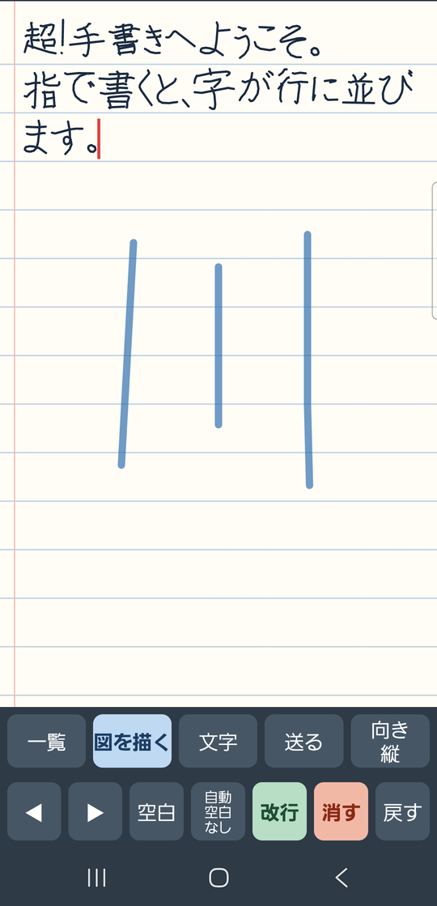
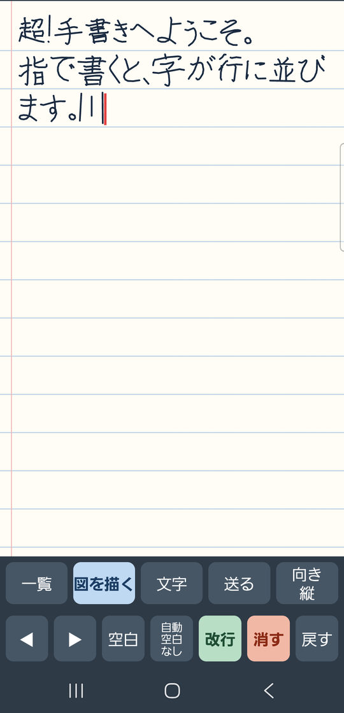
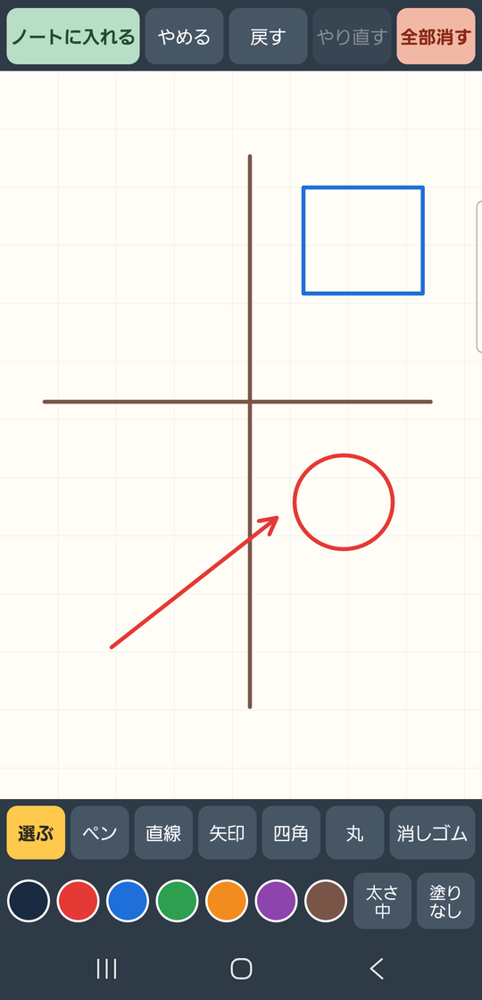
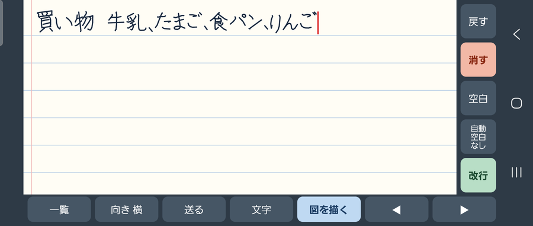
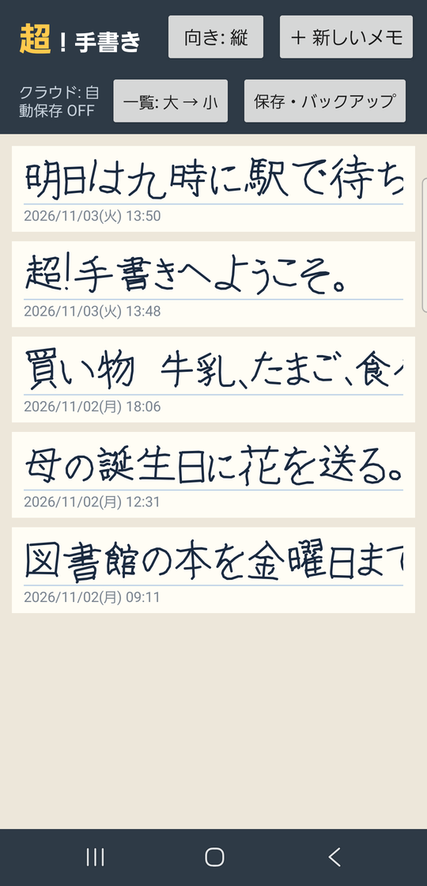
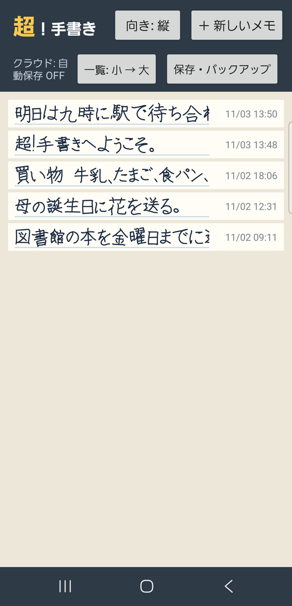
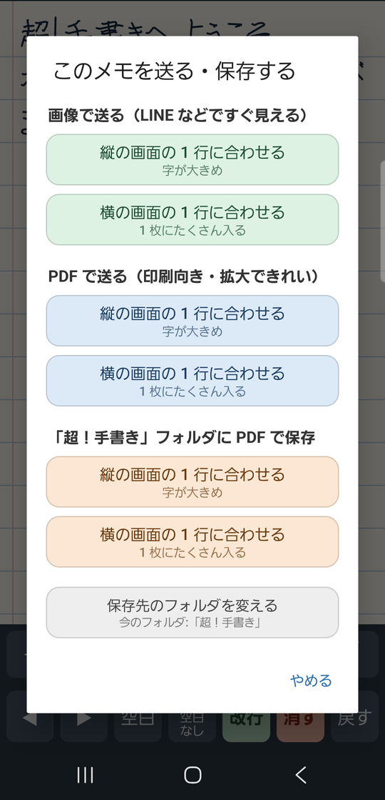
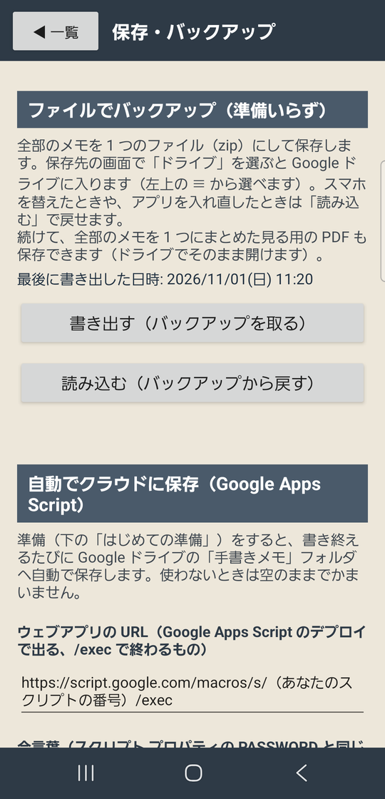
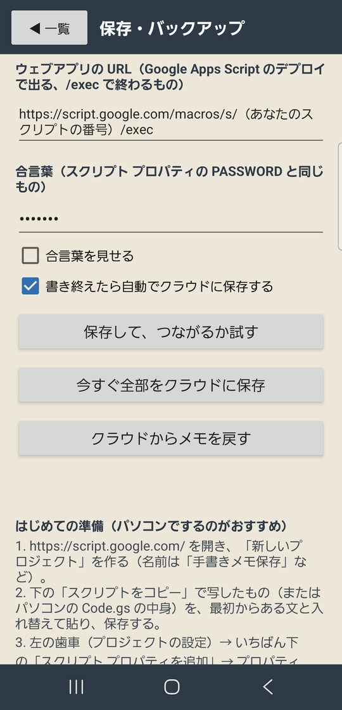

超！手書き Android 版 使い方マニュアル
（アプリの版: Android 版 v23 2026-11-03 作成）

ホーム画面のアイコン
超！手書きは、スマホの画面に指で字を書くと、ノートの行にきれいに並べてくれる手書きメモのアプリです。
書いたメモは、Google ドライブに自動で保存したり、画像や PDF にして送ったり、文字（テキスト）に直したりできます。図（地図など）も描けます。
- 写真の中のメモは、説明のために作った見本です。
- 画面は Galaxy の写真です。ほかのスマホでも、ボタンは同じです。
まず「1. アプリを入れる」と「2. 書いてみる」だけ読めば、すぐに使えます。
もくじ
- アプリを入れる
- 書いてみる
- 書く画面のボタン
- 自動空白（字のあとに自動ですき間を入れる）
- 図を描く
- 横向きで使う
- 一覧の画面の使い方
- 手書きを文字にする
- メモを送る・保存する（画像・PDF）
- バックアップを取る・戻す（ファイル）
- 自動でクラウド（Google ドライブ）に保存する
- 困ったときは
- 言葉の説明
1. アプリを入れる
このアプリは Google Play（アプリのお店）には出していません。
アプリのファイル（InkMemo_v23.apk）をスマホに入れて、自分でインストールします。
- APK のファイルを、LINE・メール・Google ドライブなどでスマホに送ります。
- スマホで InkMemo_v23.apk をタップします。
- 「このソースからのアプリのインストールは許可されていません」のような表示が出たら、「設定」→「この提供元のアプリを許可」を ON にして、前の画面に戻ります。
- 「インストール」（前の版が入っているときは「更新」）を押します。
- 「Play プロテクト」の注意が出たら、「詳細」→「インストールする」を選びます（Google Play 以外から入れるアプリには必ず出る注意です）。
- ホーム画面に「超！手書き」のアイコンが出れば完了です。
- くわしくは、別の冊子「Android スマホにアプリ（APK）を入れる方法（LINE で受け取る）」を見てください。
- 新しい版に入れ替える（更新する）ときも、今までのメモは消えません。
- アプリを「アンインストール（削除）」すると、スマホの中のメモは消えます。消す前に「10.」のバックアップか「11.」のクラウド保存をしてください。
2. 書いてみる
一覧の画面の右上「＋ 新しいメモ」を押すと、ノートの画面になります。

① 画面のどこにでも、大きく書く（ここでは「川」）

② 指を離すと、小さくなって行に入る
- 画面のどこに書いても大丈夫です。 1 文字、または数文字まとめて書いて指を離すと、0.7 秒ほどで字が小さくなり、赤い線（カーソル）のところに並びます。
- 大きくゆっくり書くほど、きれいに並びます。
- 2 本指でなぞると、ノートが上下に動きます。
- 何も書きかけていないときに軽くトンとタップすると、そこにカーソルが動きます（あとから間に書き足せます）。
- 書いたものは自動で保存されます。保存ボタンはありません。
- 行の右はしまで来ると、自動で次の行に送られます。
3. 書く画面のボタン
上の段:
| ボタン |
すること |
| 一覧 |
一覧の画面に戻る（メモは自動で保存されています） |
| 図を描く |
図（線・矢印・四角・丸など）を描いて、ノートに入れる（「5.」） |
| 文字 |
手書きを文字にする（「8.」） |
| 送る |
画像や PDF にして送る・保存する（「9.」） |
| 向き |
画面の向きを「縦」→「横」→「自動」の順に変える（「6.」） |
下の段:
| ボタン |
すること |
| ◀ ▶ |
カーソルを 1 文字ずつ左・右に動かす |
| 空白 |
すき間（1 文字分の空き）を入れる |
| 自動空白 なし／あり |
字のあとに自動ですき間を入れるかどうか（「4.」） |
| 改行 |
次の行へ（うすい緑のボタン） |
| 消す |
カーソルのすぐ前の 1 文字を消す（うすい赤のボタン） |
| 戻す |
1 つ前の状態に戻す（まちがえて消したときも、これで戻せます） |
4. 自動空白（字のあとに自動ですき間を入れる）
- 「自動空白」のボタンを押すたびに、「なし」と「あり」が入れ替わります。
- 「あり」にすると、字を書いて指を離し、2.3 秒なにも書かないと、空白（すき間）を 1 つ自動で入れます。単語ごとに少し間をあけて書くと、読みやすいメモになります。
- 続けて書いているあいだは、空白は入りません。
- いらない空白は「消す」で消せます。
5. 図を描く
地図や簡単な絵を、ノートの中に入れられます。

直線・四角・丸・矢印で描いた地図
- 書く画面の「図を描く」を押します。
- そのメモにまだ図がなければ、すぐに図を描く画面になります。
- もう図があるときは、「新しい図を描く」か、前に描いた図を「直す」「消す」かを選びます。
- 下の段で道具と色を選んで描きます。図の画面では、字のように縮まず、描いたとおりの大きさで描けます。
- 描き終えたら、左上の「ノートに入れる」を押します。図はカーソルの場所に入ります。
道具（下の 1 段目）
| ボタン |
すること |
| 選ぶ |
描いた形を選んで、動かす・大きさを変える・消す |
| ペン |
指でなぞったとおりに描く |
| 直線 |
始めと終わりを結ぶまっすぐな線 |
| 矢印 |
終わりに矢じりのついた線 |
| 四角 |
なぞった範囲の四角 |
| 丸 |
なぞった範囲の丸（だ円） |
| 消しゴム |
指でなぞったところを通る線や形を、ひとまとまりごと消す |
色・太さ・塗り（下の 2 段目）
- 左の丸い色（黒・赤・青・緑・オレンジ・むらさき・茶色）から、描く色を選びます。
- 「太さ」を押すたびに、細 → 中 → 太 → 極太 と変わります。
- 「塗り」を押すたびに、なし → うすく → ぬる と変わります。四角や丸の中を、線と同じ色で塗ります。
上のボタン
| ボタン |
すること |
| ノートに入れる |
図をノートに入れて、書く画面に戻る |
| やめる |
描いたものを入れずに、書く画面に戻る |
| 戻す・やり直す |
1 つ前に戻す／戻したのをやり直す |
| 全部消す |
図の中のものを全部消す |
形を選ぶ（動かす・大きさを変える・消す）
- 「選ぶ」を押してから形をタップすると、青い点線の枠が出ます。
- 枠の中をなぞると動きます。
- 四すみの青い丸をなぞると大きさが変わります（直線と矢印は、両はしの丸）。
- 赤い × を押すと、その形を消します。
- 何もないところから四角く囲むようになぞると、囲んだ形をまとめて選べます。
- 形を選んでいるときに色・太さ・塗りを押すと、選んだ形が変わります。
- ノートに入った図をタップすると、もう一度図の画面で直せます。
6. 横向きで使う

横向きの書く画面（書く場所が横に広くなる）
- 「向き」を押すたびに、「縦」→「横」→「自動」と変わります。
- 縦・横: スマホをどう持っても、その向きのまま。
- 自動: スマホの向きに合わせて変わる。
- 横向きでは、右側に「戻す・消す・空白・自動空白・改行」、下に「一覧・向き・送る・文字・図を描く・◀・▶」が並びます。
7. 一覧の画面の使い方
アプリを開くと、最初にこの画面が出ます。新しく書いたメモが上に並びます。

一覧の画面（大きい表示）

小さい表示（たくさん並ぶ）
| 場所 |
すること |
| ＋ 新しいメモ |
新しいメモを書く |
| 向き |
画面の向き（縦・横・自動）を変える |
| クラウド: … |
クラウドへの保存の様子（「保存済み」なら全部送れている。「自動保存 OFF」は自動保存をしていない） |
| 一覧: 大 → 小 |
一覧の 1 行の大きさを変える（押すたびに大・小が入れ替わる） |
| 保存・バックアップ |
バックアップと、クラウドへの自動保存の設定（「10.」「11.」） |
| メモ |
タップ: 開いて続きを書く 長押し: メニューを出す |
メモを長押ししたときのメニュー
- 文字にする: 手書きを文字に直す（「8.」）
- 送る・保存（PDF・画像）: 画像や PDF にして送る・保存する（「9.」）
- 消す: メモを消す。もう一度「消す」を押すと消えます。クラウドに保存していたメモは、クラウドからは消えずに「消したメモ」フォルダに移ります。
8. 手書きを文字にする
手書きのメモを、ふつうの文字（テキスト）に直せます。読み取りはスマホの中で行います。
- 書く画面の「文字」、または一覧でメモを長押し →「文字にする」。
- はじめて使うときだけ、文字を読み取るための辞書（約 20MB）をダウンロードします。Wi-Fi につないでいるときに行ってください。
- 読み取った文字が出ます。まちがっているところは、その場でタップして直せます。
写真では「指で書くと、」の「と、」が「公」になっています。機械はまちがえることがあるので、直してから使います。
| ボタン |
すること |
| 保存 |
直した文字を、このメモといっしょに覚えておく |
| コピー |
文字をコピーする（LINE やメールに貼り付けられる） |
| 送る |
文字を LINE・メールなどで送る |
| 「（フォルダ名）」に保存（.txt） |
文字のファイル（.txt）を、決めたフォルダに保存する |
| 保存先のフォルダを変える › |
.txt や PDF を保存するフォルダを選び直す |
| 手書きからもう一度読み取る |
直したものを捨てて、もう一度読み取る |
9. メモを送る・保存する（画像・PDF）
書く画面の「送る」、または一覧でメモを長押し →「送る・保存（PDF・画像）」。

「このメモを送る・保存する」の画面
| 選ぶもの |
すること |
| 画像で送る（緑のボタン） |
LINE などで、開いてすぐに見える |
| PDF で送る（青のボタン） |
印刷したいときや、拡大してもきれいに見たいときに |
| 「（フォルダ名）」フォルダに PDF で保存（オレンジのボタン） |
決めたフォルダに PDF を入れる（同じメモは上書き） |
| 保存先のフォルダを変える |
保存するフォルダを選ぶ |
どれも、2 つのボタンから選びます。
| ボタン |
意味 |
| 縦の画面の 1 行に合わせる |
1 行の字数を縦の画面と同じにする。字が大きめになる |
| 横の画面の 1 行に合わせる |
1 行の字数を横の画面と同じにする。1 枚にたくさん入る |
- PDF は A4 の縦の大きさです。
- 画像・PDF で送るときは、次に送り先（LINE・Gmail・ドライブなど）を選ぶ画面が出ます。
保存するフォルダを Google ドライブにする方法
- 「保存先のフォルダを変える」を押す。
- 左上の「≡」→「ドライブ」を選ぶ。
- 「マイドライブ」→ 入れたいフォルダを開く。
- 下の「このフォルダを使用」→「許可」。
- 次からは、そのフォルダに自動で入ります。
ファイルの名前
- メモ_（冒頭の文字）_（作った日時）.pdf になります。例:
メモ_買い物牛乳たまご_261102-1806.pdf
- 冒頭の文字は、手書きの最初の 12 文字くらいを機械で読んだものです（読みまちがえることもあります）。
10. バックアップを取る・戻す（ファイル）
クラウドの準備をしなくても、全部のメモを 1 つのファイル（zip）にまとめて保存できます。

「保存・バックアップ」の画面のいちばん上
バックアップを取る
- 一覧の画面 →「保存・バックアップ」→「書き出す（バックアップを取る）」。
- 保存先の画面が出るので、左上の「≡」→「ドライブ」を選ぶと Google ドライブに入ります。「保存」。
- 続けて、全部のメモをまとめた見る用の PDF も保存できます（ドライブでそのまま開けます）。
- 「最後に書き出した日時」で、いつバックアップしたか分かります。
バックアップから戻す
- 「保存・バックアップ」→「読み込む（バックアップから戻す）」。
- 保存した zip ファイルを選ぶ →「戻す」。
- スマホの中のほうが新しいメモは、そのままにします（上書きしません）。
- iPhone・iPad の Web 版との行き来は、クラウド（「11.」）を使います（Web 版にはファイルのバックアップがありません）。
11. 自動でクラウド（Google ドライブ）に保存する
準備をすると、メモを書き終えるたびに、自分の Google ドライブの「手書きメモ」フォルダへ自動で保存されます。スマホをなくしたり壊したりしても、メモが残ります。iPhone・iPad の Web 版とも、同じフォルダでメモを行き来できます。

URL と合言葉を入れる所
スクリプトの準備（はじめてのときだけ・パソコンがおすすめ）
- くわしい手順は、別の冊子「超！手書き クラウド保存の準備マニュアル」を見てください。
- かんたんな流れ（画面のいちばん下「はじめての準備」と同じ）:
1. https://script.google.com/ で「新しいプロジェクト」を作る。
2. 「スクリプトをコピー」で写した文（またはパソコンで版のフォルダの「Code.gs（Google Apps Script に貼るもの）.txt」）を貼って保存する。
3. 歯車（プロジェクトの設定）→「スクリプト プロパティを追加」→ PASSWORD に好きな合言葉。
4. 「デプロイ」→「新しいデプロイ」→「ウェブアプリ」、実行は「自分」、アクセスは「全員」→「デプロイ」→「アクセスを承認」→「許可」。
5. 出てきた URL（
/exec で終わる）をスマホに送る。
アプリに入れる
- 一覧の画面 →「保存・バックアップ」→ 下へなぞる。
- 「ウェブアプリの URL」の欄を長押し →「貼り付け」。
- 「合言葉」の欄に、PASSWORD と同じ合言葉を入れる（「合言葉を見せる」で確かめられる）。
- 「書き終えたら自動でクラウドに保存する」にチェックを入れる。
- 「保存して、つながるか試す」。「つながりました」と出れば完了です。
- 今までのメモもすぐ送りたいときは「今すぐ全部をクラウドに保存」。
保存されるもの（Google ドライブの中）
| 場所 |
中身 |
| マイドライブ ＞ 手書きメモ |
見る用の PDF（メモ_冒頭の文字_日時.pdf）。メモを書き直すと入れ替わる |
| 手書きメモ ＞ 復元用データ |
アプリに戻すためのデータ。さわらないでください |
| 手書きメモ ＞ 消したメモ |
アプリで消したメモ（取り戻したいときのため） |
スマホを替えたとき・アプリを入れ直したとき
- アプリを入れ、同じ URL と合言葉を入れて「保存して、つながるか試す」。
- 「クラウドからメモを戻す」→「戻す」。
12. 困ったときは
| こんなとき |
どうする |
| 字がうまく行に入らない |
大きめにゆっくり書く。1 文字ずつ指を離す |
| まちがえて消した |
「戻す」を押す |
| 画面が勝手に回る |
「向き」を押して「縦」または「横」に決める |
| 「つながりませんでした。合言葉が違います」 |
スクリプト プロパティの PASSWORD と同じ合言葉か確かめる（大文字・小文字、空白に注意） |
| 「答えが読めません。URL が正しいか…」 |
URL が /exec で終わっているか、デプロイの「アクセスできるユーザー」が「全員」か確かめる |
| 「クラウド: 送れませんでした」 |
電波の悪いところでは送れません。電波のよいところで一覧を開くと、自動でやり直します |
| ドライブに PDF が見つからない |
「手書きメモ」フォルダを見ているか確かめる。数秒〜十数秒かかることがあります |
| 「辞書をダウンロードできませんでした」 |
Wi-Fi につないで、もう一度「文字」を押す |
| ファイル名の冒頭の文字がおかしい |
手書きを機械で読んでいるためです。「文字にする」で直して「保存」すると、次からは直した文字が使われます |
13. 言葉の説明
| 言葉 |
意味 |
| APK（エーピーケー） |
Android のアプリのファイル。タップするとインストールできる |
| Google ドライブ |
Google の、インターネット上のファイル置き場（無料で 15GB） |
| クラウド |
インターネット上の保存場所。ここでは自分の Google ドライブのこと |
| Google Apps Script（GAS・ガス） |
Google が無料で用意している、小さなプログラムを動かすしくみ。メモを Google ドライブに保存する係 |
| デプロイ |
作ったスクリプトを、アプリから使えるように公開すること |
| URL |
インターネット上の住所。https:// から始まる文字の並び |
| 合言葉（PASSWORD） |
自分だけがスクリプトを使えるようにするための暗号。人に教えない |
| カーソル |
次の字が入る場所をしめす、赤い縦の線 |
| PDF |
見た目をそのまま保つファイル。どの機械でも同じように見え、印刷もできる |
| zip（ジップ） |
たくさんのファイルを 1 つにまとめたファイル |